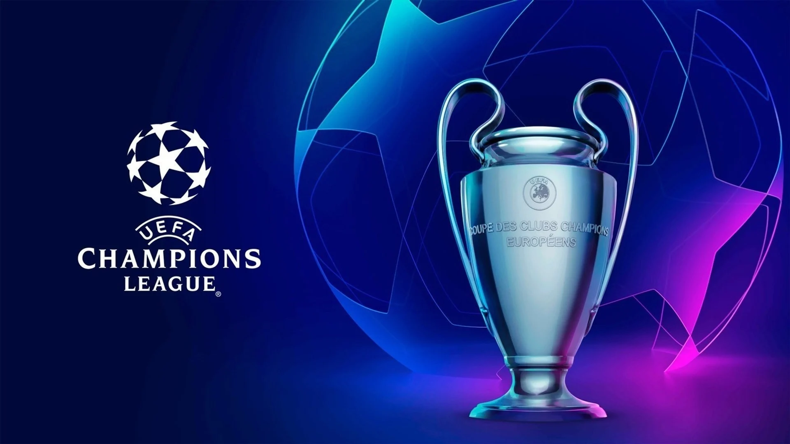
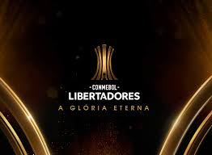
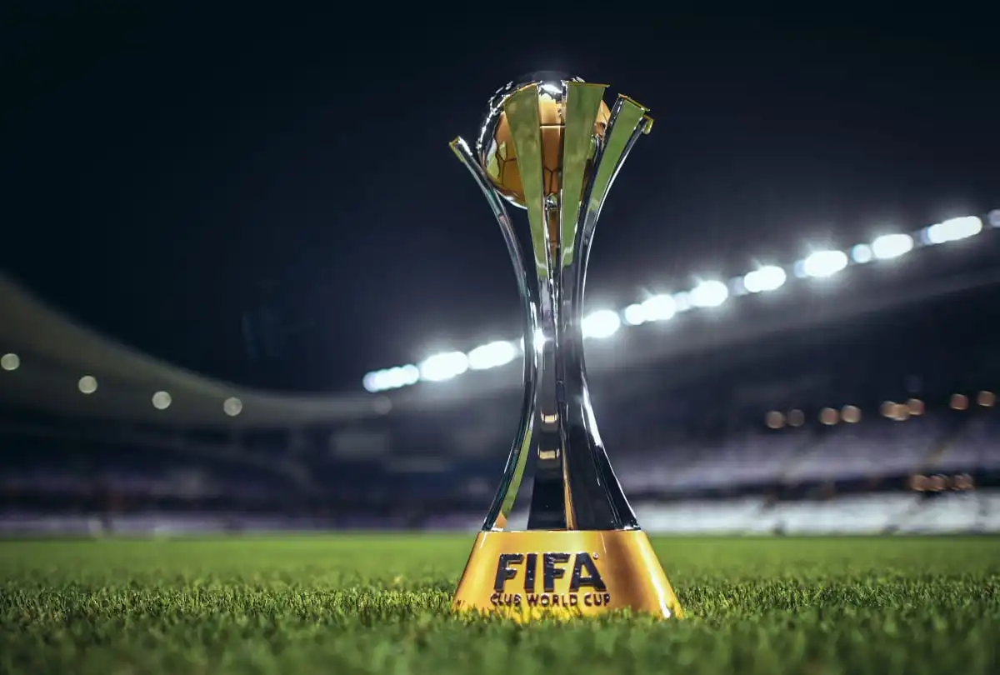

História das Competições de Clubes
Bem-vindo ao um site que conta um pouco sobre a história das competições de clubes mais prestigiadas do mundo: UEFA Champions League, Copa Libertadores e Mundial de Clubes.

Para saber mais sobre cada competição, selecione uma das opções de navegação abaixo.

Origem
A Champions League foi criada em 1955 ainda com o nome de Taça dos Clubes Campeões Europeus. Embora sempre tenha sido respaldada pela UEFA, a ideia da criação partiu dos jornalistas franceses Jacques Ferran e Gabriel Hanot, ambos do jornal L’Équipe. A primeira edição contou com os campeões nacionais da Bélgica, Dinamarca, Suécia, Itália, Espanha, França e Alemanha, além de outros nove clubes convidados, e acabou com o Real Madrid tornando-se campeão na final contra o Stade de Reims, da França. O clube merengue ganhou não só a primeira edição como também as outras quatro seguintes, emendando o primeiro e único pentacampeonato consecutivo da história da competição. Outras equipes vieram a conquistar um tricampeonato de forma seguida: o Ajax (1971, 1972 e 1973); o Bayern de Munique (1974, 1975 e 1976) e mais uma vez o Real Madrid (2016, 2017 e 2018).
Times Vencedores
- Real Madrid: 14 (1955/1956, 1956/1957, 1957/1958, 1958/1959, 1959/1960, 1965/1966, 1997/1998, 1999/2000, 2001/2002, 2013/2014, 2015/2016, 2016/2017, 2017/2018 e 2021/2022)
- Milan: 7 (1962/1963, 1968/1969, 1988/1989, 1989/1990, 1993/1994, 2002/2003 e 2006/2007)
- Bayern de Munique: 6 (1973/1974, 1974/1975, 1975/1976, 2000/2001, 2012/2013 e 2019/2020)
- Liverpool: 6 (1976/1977, 1977/1978, 1980/1981, 1983/1984, 2004/2005 e 2018/2019)
- Barcelona: 5 (1991/1992, 2005/2006, 2008/2009, 2010/2011 e 2014/2015)
- Inter de Milão: 3 (1963/1964, 1964/1965 e 2009/2010)
- Manchester United: 3 (1967/1968, 1998/1999 e 2007/2008)
- Juventus: 2 (1984/1985 e 1995/1996)
- Benfica: 2 (1960/1961 e 1961/1962)
- Chelsea: 2 (2011/2012 e 2020/2021)
- Manchester City: 1 (2022/2023)
- Borussia Dortmund: 1 (1996/1997)

Origem
A CSF convocou em 30 de julho de 1959 um novo congresso em Caracas, por conseguinte a sede da Federação de um futebol incipiente. O ponto mais importante da reunião: a criação da Copa dos Campeões. A ideia original do Chile contava agora com o fervente apoio da Argentina e do Brasil.
Finalmente, em 2 de agosto de 1959, aquela reunião extensa passou a ser histórica. Com 8 votos a favor e um contra (Uruguai), além da abstenção da Venezuela, a CSF resolveu, por maioria de votos, a criação da Copa dos Campeões (assim foi chamada). Logo depois da sessão do congresso entre 27 e 30 de agosto de 1959 presidido por Fermín Sorhueta (Uruguai) foi decidido que a competição se chamaria “Libertadores da América”, em homenagem aos heróis que cimentaram a criação das nações sul-americanas.
Times Vencedores
Independiente-ARG: 7 (1964, 1965, 1972, 1973, 1974, 1975 e 1984)
Boca Juniors-ARG: 6 (1977, 1978, 2000, 2001, 2003 e 2007)
Penãrol-URU: 5 (1960, 1961, 1966, 1982 e 1987)
River Plate-ARG: 4 (1986, 1996, 2015 e 2018)
Nacional-URU: 3 (1971, 1980 e 1988)
Flamengo-BRA: 3 (1981, 2019 e 2022)
Palmeiras-BRA: 3 (1999, 2020 e 2021)
São Paulo-BRA: 3 (1992, 1993 e 2005)
Santos-BRA: 3 (1962 , 1963 e 2011)
Corinthians-BRA: 1 (2012)

Origem
O Mundial de Clubes começou, de acordo com a FIFA, em 1960. Na época, iniciou-se a Copa Intercontinental de Clubes, na qual disputavam, os campeões da Champions League e da Libertadores da América. O Real Madrid se sagrou o primeiro campeão da competição. O formato da competição, com apenas uma partida, durou até 2004.
Em 2005, a FIFA iniciou um novo modelo de competição, no qual campeões das competições continentais de diferentes continentes, além de um representante do país-sede, disputavam o troféu internacional. Por serem considerados mais fortes tecnicamente, os campeões da Champions League e da Libertadores passaram a entrar direto na semifinal. Desde então, os europeus nunca deixaram de disputar a decisão, enquanto os sul-americanos tropeçaram em poucas oportunidades.
Times Vencedores
Real Madrid: 8 (1960, 1998, 2002, 2014, 2016, 2017, 2018 e 2022)
Milan: 4 (1969, 1989, 1990 e 2007)
Bayern de Munique: 4 (1976, 2001, 2013 e 2020)
Boca Juniors: 3 (1977, 2000 e 2003)
São Paulo: 3 (1992, 1993 e 2005)
Internazionale: 3 (1964, 1965 e 2010)
Barcelona: 3 (2009, 2011 e 2015)
Santos: 2 (1962 e 1963)
Corinthians: 2 (2000 e 2012)
Flamengo: 1 (1981)
River Plate: 1 (1986)